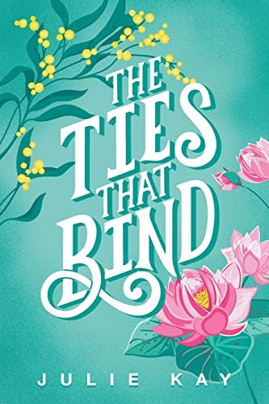

The Ties That Bind
Historical romance, 2023
Set amongst the giant ghost gums of country Victoria, follow the trials and tribulations of two sisters who must battle through great personal sacrifice, unrelenting passions and disarming loss. The Vietnam War arrives and brings them more heartbreaking tragedy, loss and unrequited love from which they may not recover.
Nominated for the HNSA ARA Historical Novel Prize 2023 and for the University of Queensland Fiction Book Award in the 2023 Queensland Literary Awards.